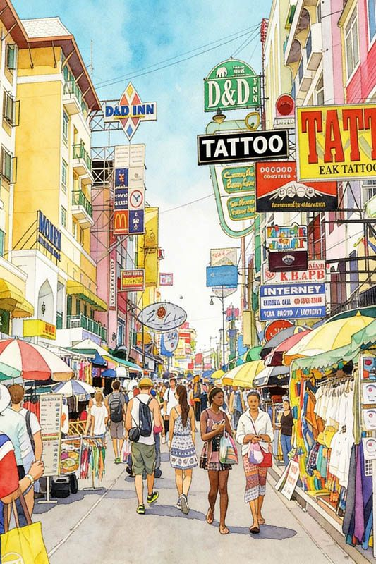
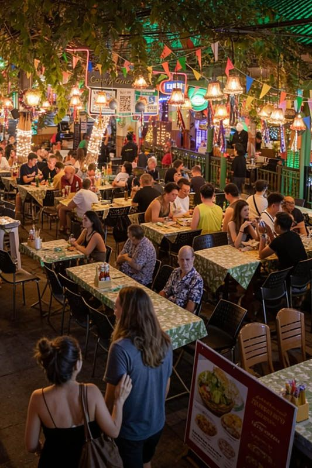

Khao San Road is the world's most famous backpacker street, a 400-meter stretch of vibrant energy that has been called "the center of the backpacking universe." This legendary destination attracts budget travelers, backpackers, and adventure seekers from around the globe with its unique combination of affordable accommodation, lively nightlife, international cuisine, and authentic Bangkok street culture.
What makes Khao San Road special is its incredible cultural diversity and budget-friendly atmosphere. The street transforms from a relatively quiet commercial area during the day into a pulsating party destination at night, featuring street food vendors, live music venues, budget bars serving inexpensive drinks, and an international crowd creating an energetic social scene unlike anywhere else in Bangkok.
For Royal Ivory Hotel guests seeking authentic Bangkok nightlife and cultural diversity, Khao San Road offers a fascinating contrast to the more upscale entertainment districts. The area provides genuine cultural immersion, budget-friendly entertainment, and the chance to experience Bangkok's legendary backpacker culture while staying in comfortable hotel accommodation nearby.
Khao San Road is located in the historic Banglamphu district near the Grand Palace, requiring taxi transportation from Royal Ivory Hotel as there's no direct BTS or MRT access to the area. The journey offers glimpses of both modern and historic Bangkok.
Cost: 150-250 Baht each way | Journey Time: 30-40 minutes | Traffic Factor: Longer during rush hours
🚕 Travel Tip from Royal Ivory: Plan to visit Khao San Road in the evening (6:00-8:00 PM arrival) when the street comes alive with food vendors, live music, and the full backpacker atmosphere. Our concierge can arrange return taxi pickup for late-night convenience.

Khao San Road transforms dramatically after sunset, becoming one of Bangkok's most energetic and budget-friendly nightlife destinations. The street buzzes with live music, street performers, outdoor bars, and an international crowd creating a unique party atmosphere that has made it legendary among travelers worldwide.
The street itself becomes entertainment with street performers, fire shows, live acoustic music, traditional Thai performances, international buskers, and impromptu social gatherings. The atmosphere is welcoming and inclusive, with travelers from every continent mingling in outdoor seating areas and street-side venues.
6:00-8:00 PM: Street food vendors set up, early bars open, music starts
8:00-11:00 PM: Peak energy with full street life, live performances, crowded bars
11:00 PM-2:00 AM: Late-night party atmosphere, dance venues, street food continues
Budget-friendly: Most drinks 90-130 THB, street food 50-150 Baht
Khao San Road offers an incredible variety of street food and international cuisine, catering to backpackers from around the world while maintaining authentic Thai street food traditions. The concentration of food vendors creates a 24-hour eating destination with options for every taste and budget.
Khao San Road features restaurants serving Indian curries, Israeli falafel, Western breakfasts, Italian pasta, Japanese sushi, Mexican tacos, and vegetarian/vegan options catering to diverse international travelers. Many establishments offer familiar comfort foods at budget prices, making it easy for travelers to find cuisine from home.
🍜 Smart Food Budget Tips:
Street food: 50-150 Baht per dish - incredible value and authentic flavors
Local restaurants: 150-300 Baht for full meals with drinks
International cuisine: 200-400 Baht for Western or specialty foods
Pro tip: Eat where locals and long-term backpackers eat for best value and quality!
Khao San Road is a shopper's paradise for budget-conscious travelers, offering everything from traditional Thai souvenirs to traveler gear, clothing, and unique finds at bargain prices. The area specializes in backpacker essentials and authentic Thai products.
Gentle bargaining is expected and part of the cultural experience on Khao San Road. Start at 50-60% of the asking price for souvenirs and accessories. Vendors expect negotiation and often enjoy the interaction with international visitors. Cash payments get better prices than cards.
Khao San Road provides a unique cultural experience where traditional Thai street life meets international backpacker culture. This fusion creates an atmosphere unlike anywhere else in the world, offering insights into both local Bangkok life and global traveler culture.
Khao San Road's location in historic Banglamphu provides easy access to major cultural sites: Grand Palace (10 minutes), Wat Pho Temple (15 minutes), National Museum (10 minutes), and Democracy Monument (5 minutes). This allows visitors to combine cultural sightseeing with Khao San's social scene.
Khao San Road is generally safe for tourists, with heavy foot traffic, police presence, and a welcoming atmosphere. However, standard nightlife and travel safety precautions ensure the best experience in this busy entertainment district.
| Safety Area | Precautions | Recommendations | Emergency Info |
|---|---|---|---|
| 🍺 Alcohol & Drinks | Watch drinks, know limits, stay hydrated | Drink plenty of water, eat before drinking | Tourist Police nearby |
| 💰 Money & Valuables | Keep valuables secure, use hotel safe | Carry only necessary cash, copy passport | ATMs available on street |
| 🚕 Transportation | Arrange return transport, avoid late motorbike taxis | Use registered taxis, hotel pickup service | Royal Ivory can arrange pickup |
| 👥 Social Situations | Trust instincts, stay with groups when possible | Make local connections, join group activities | Tourist Police booth on street |
Khao San Road is the world's most famous backpacker street, known for its vibrant nightlife, budget-friendly bars, international street food, live music, and energetic atmosphere that attracts travelers from around the globe. It's called the "center of the backpacking universe."
Khao San Road comes alive in the evening around 6:00 PM and stays busy until 2:00 AM. Peak hours are 8:00 PM-12:00 AM when street food vendors, bars, live music, and street performers create the most vibrant atmosphere.
Take taxi direct from Royal Ivory Hotel to Khao San Road (30-40 minutes, 150-250 Baht) depending on traffic. Alternatively, BTS to National Stadium then taxi (shorter taxi ride). No direct BTS/MRT access to Khao San Road.
Yes, Khao San Road is generally safe for tourists with heavy foot traffic and police presence. Standard nightlife precautions apply: watch drinks, stay aware of surroundings, keep valuables secure, and avoid excessive alcohol consumption.
Budget 1,500-3,000 Baht for full evening: drinks 90-130 THB each, street food 50-150 Baht per dish, meals 200-400 Baht, shopping varies. Transport 300-500 Baht roundtrip. Very budget-friendly compared to upscale Bangkok nightlife areas.
Khao San Road offers completely different experiences during day and night, with the street transforming from a relatively calm commercial area into the world's most famous backpacker party destination after sunset.